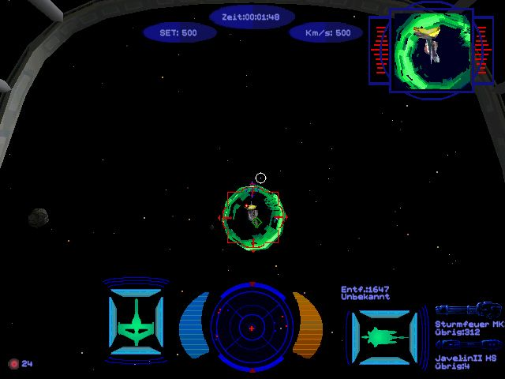
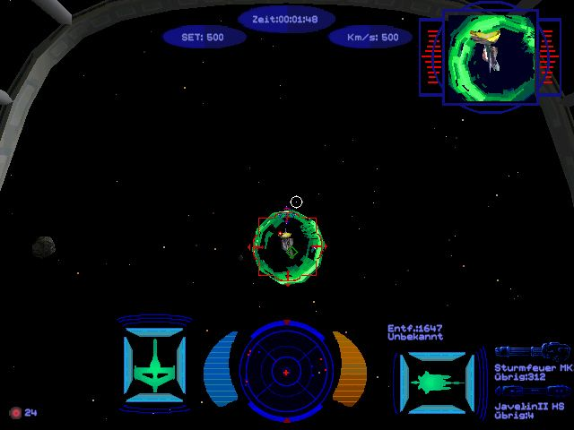

The Blog
Our childhood favourites
By: Talon1024
When you think "retro games", what's the first thing that comes to mind? For some of us, it's the newfangled games made to look, feel, and play like the games people used to make. But we also count our favourite video games from our childhood as "retro games".
Read more...
How to boycott Nintendo
By: Talon1024
If you've been keeping an eye on game industry news as of late, you'll notice Nintendo has been in the news a lot lately. They destroyed the company behind Yuzu and Citra, and more recently, they have ordered a purge of all Nintendo-related content from the Steam Workshop for Garry's Mod. If you want to try and hurt them back, while still being a law-abiding citizen, the only way to do that is to boycott Nintendo.
Read more...
 
